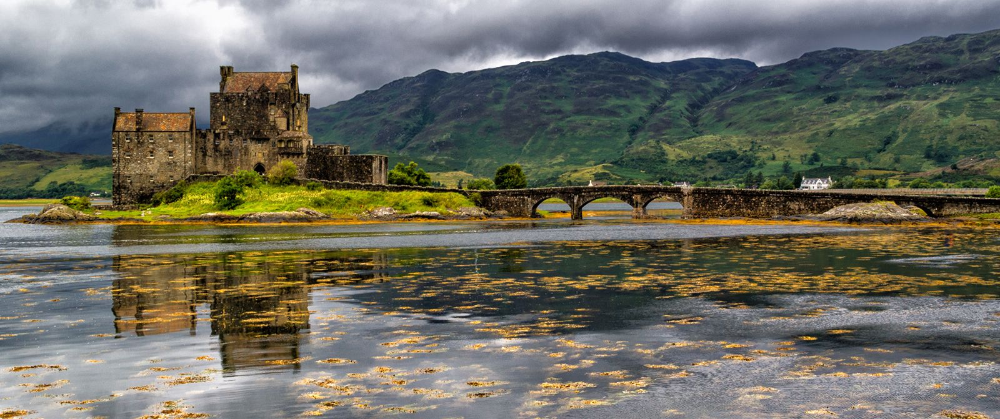

Škotska (škotski gaelski Alba, latinski: Caledonia, engleski: Scotland) je dio Ujedinjenog Kraljevstva. Najsjeverniji dio otoka Velike Britanije; s otočjem Hebridi, Orkney i Shetland obuhvaća 77.180 km², a s unutarnjim vodama 78.764 km². Škotska je 1980. godine imala 5.153.000 stanovnika. Gustoća iznosi 65 stanovnika na km². Najgušće je naseljeno središnje područje. Političko, industrijsko i kulturno središte je Edinburgh (1981. godine - 419.200 stanovnika). Na zapadu i sjeveru dopire do Atlantskog oceana, a na istoku do Sjevernog mora. Od Engleske je dijeli granična crta koja se proteže od ušća rijeke Tweed do zaljeva Solay. Za Škotsku je kerakteristična razvedenost obale, osobito zapadne, po čemu se znatno razlikuje od Engleske. Na istočnoj obali duboko su se usjekli zaljevi Firth of Forth i Moray Firth. Škotska se uglavnom dijeli na južni, središnji i sjeverni dio. Južni dio obuhvaća Južno visočje s graničnim gorjem Cheviot, građenim pretežno od starih stijena. Središnji dio sastoji se od niza depresija, koje se nastavljaju u Firth of Clyde, Firth of Forth i Firth of Tay. Njima je odvojeno brdovito područje na jugu od granitnih ravnjaka gorja Grampian na sjeveru s najvišim vrhom britanskog otočja Ben Nevis, 1343 m.
Udolina Glen More s nizom jezera rastavlja gorje Grampain od sjevernog visočja (Northern Highlands). Sjeverni dio zaprema Škotsko visočje, koje na krajnjem sjeveru prelazi u obalnu ravnicu.
Osnovne su privredne grane rudarstvo i industrija. Iskorištavaju se ležišta ugljena, koja daju oko 10% ukupne britanske proizvodnje, željezne, bakrene i olovne rude.
Velike količine električne energije potječu iz hidroelektrana i iz nuklearnih elektrana. Uz metalurgiju razvila se metalna industrija s brodogradnjom, proizvodnjom strojeva i sl. Poznata je dobro razvijena tekstilna (pamučna, vunena, prerada jute) i dr., prehrambena (proizvodnja viskija), kemijska i petrokemijska industrija s velikim rafinerijskim središtem u Grangemouthu, do kojeg vodi naftovod iz ležišta Forties u podmorju Sjevernog mora (preko Crudena Baya i Aberdeena). Važnu privrednu granu predstavlja i stočarstvo, osobito uzgoj goveda i ovaca. Oko 25% obrađenih površina nalazi se pod žitaricama (zob, pšenica, ječam) i industrijskim biljkama. U priobalnim vodama dobro razvijeno je ribarstvo; poznate su ribarske luke Aberdeen, Peterhead i Banff. Vrlo su atraktivne trgovačke luke Glasgow i Dundee. Glavno prometno središte jest Edinburgh. Sve veću ulogu ima turizam.
Gradovi Škotske
Edinburgh
Edinburgh je glavni grad Škotske smješten u zaljevu u Forth, blizu rijeke Leith. Broji oko 477,660 stanovnika (2009.) i spada pod grofoviju Midlothian. Drugi je po veličini grad u Škotskoj, poslije Glasgowa, i sedmi u Ujedinjenom Kraljevstvu.
Glasgow
Glasgow je najveći grad u Škotskoj i treći najveći grad u Ujedinjenom kraljevstvu (poslije Londona i Birminghama). Nalazi se na rijeci Clyde i leži u nizini.
Dundee
Dundee je škotski četvrti grad po veličini, i 51. naseljeno područje u Velikoj Britaniji . Procjena broja stanovnika sredinom godine 2015. bio je 148.210 što je dalo Dundee gustoću naseljenosti od 2,477 / km 2 ili 6420 / sq Ministarstvo unutarnjih poslova, drugi najviši u Škotskoj.
Aberdeen
Aberdeen je škotski grad, treći po veličini u Škotskoj s 202,370 stanovnika (2005.). Grad nosi nadimke poput Granitni grad, Srebrni grad s zlatnim pijeskom zato što je sredinom 18. i 20. stoljeća za izgradnju korišten granit iz lokalnih rudnika u kojem turmalini svjetlucaju poput srebra. Otkako je 1970-ih otkriven nafta u Sjevernom moru grad nazivaju i Naftnom prijestolnicom Europe ili Energetskom prijestolnicom Europe. Grad je smješten između rijeka Dee i Don.
Inverness
Inverness je najsjeverniji grad u Škotskoj. To je administrativno središte za brdska vijeća područja, a slovi kao glavni grad u gorjoj Škotskoj. U 2014. godini, ankete škotskih studija su potvrdili Inverness kao najsretnije mjesto u Škotskoj i drugi najsretniji grad u Velikoj Britaniji.
Ayr
Ayr je veliki grad i bivši Royal Burgh smješten na zapadnoj obali Ayrshire u Škotskoj, Ujedinjeno Kraljevstvo . To je administrativno središte Južnog Ayrshire područje vijeća i povijesne županije grad u Ayrshireu. Ayr je trenutno najnaseljenije naselje u Ayrshire i 12. najmnogoljudnije naselje u Škotskoj. Grad u kombinaciji je manji grad Prestwick prema sjeveru, tvoreći jednu kontinuiranu urbanu područje s gradom.
Škotski dvorci

Škotske poslovice i mudrolije:
"Be happy while you're living, for you're a long time dead."
"Don't judge by apperearances; a rich heart may be under a poor coat."
"Alcohol doesn't solve any problem, but then neither does milk."
"A bad wound may heal, but a bad name will kill."
Škot u tradicionalnoj nošnji
Galerija
Škotska priroda i životinje
Kontakt
Ispunite potrebna polja ako biste htjeli ostaviti komentare.
{kind=link}
{kind=link}
{kind=link}
{kind=link}
{kind=link}